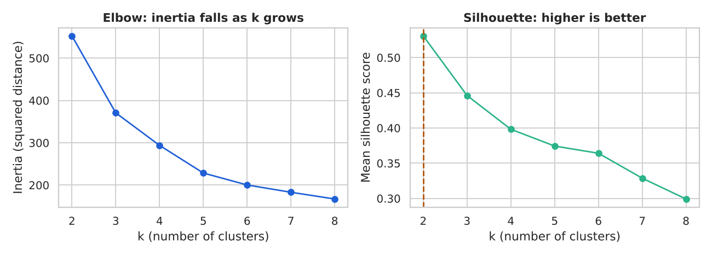
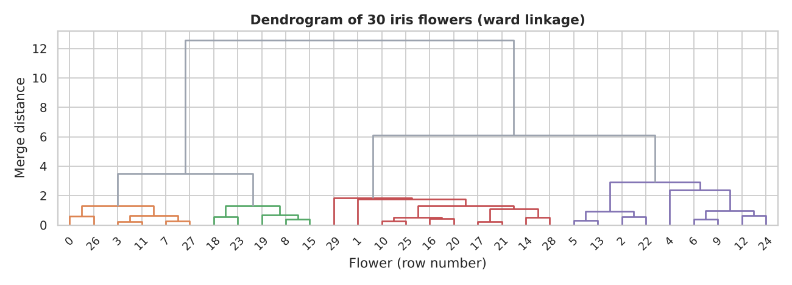
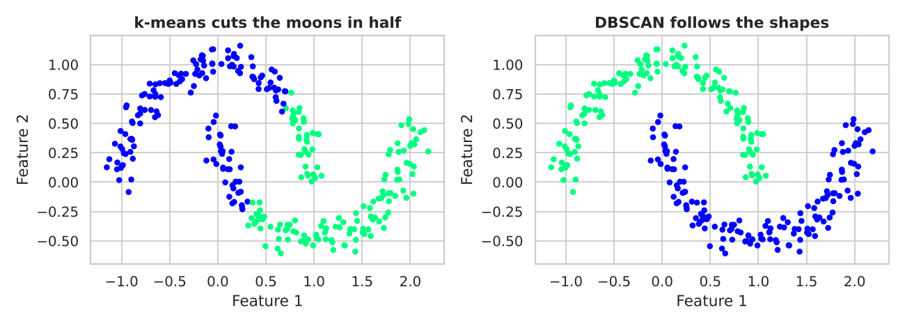
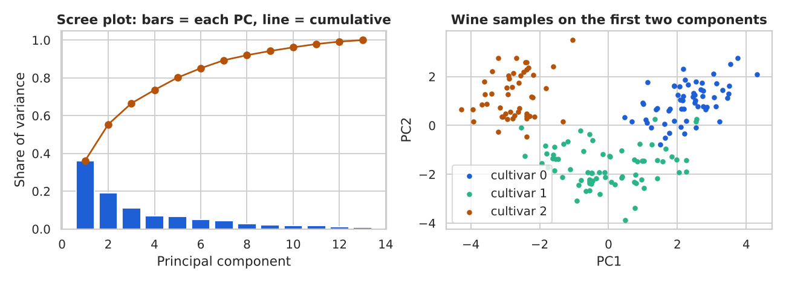
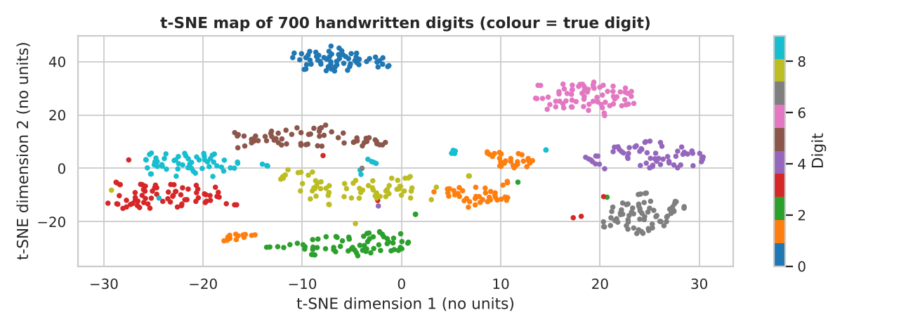
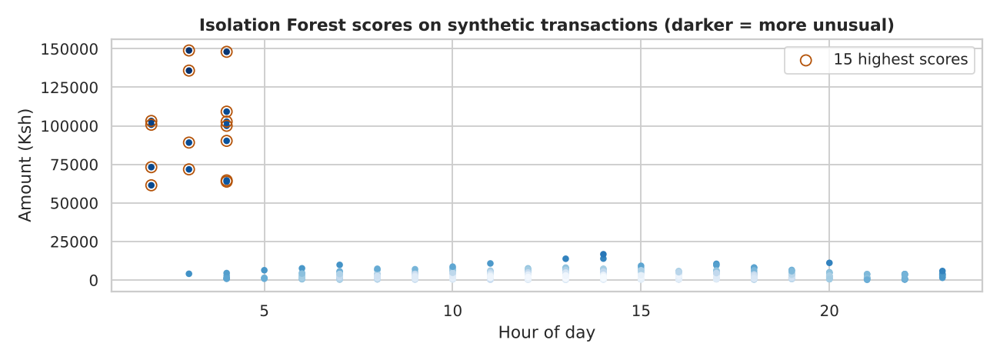

Find groups, simplify wide tables, spot oddities and discover patterns when there is no answer column to learn from.
In this part
Explain the difference between supervised and unsupervised learning, and why scaling comes first.
Group rows with k-means, hierarchical clustering, DBSCAN and Gaussian mixtures, and judge the groups without labels.
Shrink many columns into a few with PCA, and draw high-dimensional data with t-SNE.
Flag unusual rows with simple rules, Isolation Forest, Local Outlier Factor and one-class SVM.
Find items bought together (association rules) and build a tiny recommender.
You need first Parts 9-12Time 5 to 7 hours
#13.1 What unsupervised learning is, and why scaling matters
In supervised learning (Parts 10-12) every row has an answer column, such as loan default or house price, and the model learns to predict it. In unsupervised learning there is no answer column. You give the algorithm only the features and ask: what structure is in here? The main jobs are clustering (group similar rows), dimensionality reduction (describe many columns with a few), anomaly detection (find rows that do not fit) and association mining (find things that happen together).
Because there are no labels, there is no accuracy score. You judge the result by whether it is stable, makes sense to a person who knows the business, and helps a later decision.
Most of these methods work with distance. If one column is in thousands (income in Ksh) and another is small (age in years), the big column wins every distance comparison. Scaling puts columns on a comparable footing. The usual choice is the z-score: subtract the mean and divide by the standard deviation.
importnumpyasnp,pandasaspdfromsklearn.preprocessingimportStandardScaler# three synthetic customers: age (years), monthly income (Ksh)X=np.array([[25,30000.0],[26,90000.0],[60,30500.0]])d=lambdaa,b:np.sqrt(((a-b)**2).sum())print("raw distance 0-1 (same age, income differs):",round(d(X[0],X[1])))print("raw distance 0-2 (35 years apart, same income):",round(d(X[0],X[2])))Z=StandardScaler().fit_transform(X)print("scaled distance 0-1:",round(d(Z[0],Z[1]),2))print("scaled distance 0-2:",round(d(Z[0],Z[2]),2))
raw distance 0-1 (same age, income differs): 60000
raw distance 0-2 (35 years apart, same income): 501
scaled distance 0-1: 2.13
scaled distance 0-2: 2.15
Before scaling, a 35-year age gap looks tiny next to a 60,000 Ksh income gap. After scaling, both columns count fairly. Rule: scale numeric features before any distance-based method (k-means, hierarchical, DBSCAN, LOF, PCA, t-SNE). Fit the scaler on training data only when the result feeds a later supervised model (Part 9).
Common mistake. Forgetting to scale is the most common unsupervised mistake: the clusters then just split the biggest column and look 'successful' while ignoring everything else.
What it does: splits rows into k groups, each described by a centre point (a centroid).
How it works: (1) pick k starting centres; (2) assign every row to its nearest centre; (3) move each centre to the mean of its rows; (4) repeat steps 2-3 until nothing changes. k-means++ is the smart way to pick the starting centres: they are chosen far apart, which avoids poor starts. It is the default in scikit-learn.
Works best when groups are roughly round and similar in size. Struggles when groups are long, curved or very different in size, when there are outliers, or when features are not scaled. Key settings:n_clusters (k), init (k-means++), n_init (number of restarts), random_state.
Our running example is the public penguins data (Palmer Station, CC0 licence). We keep four body measurements, drop rows with missing values (a small number), and ignore the species column while clustering.
importos,numpyasnp,pandasaspdfrompathlibimportPathPUB=Path(os.environ["GUIDE_ROOT"])/"datasets"/"public"defload_public(name,url=None):p=PUB/namereturnpd.read_csv(pifp.exists()elseurl)pen=load_public("penguins.csv").dropna().reset_index(drop=True)cols=["bill_length_mm","bill_depth_mm","flipper_length_mm","body_mass_g"]print(pen.shape,"rows after dropping missing values")pen[cols].describe().loc[["mean","std"]].round(1)
Each row is one cluster's average measurements. To read a cluster, describe it in plain words (for example 'heavy birds with long flippers'). That naming step is where clustering becomes useful.
You must choose k yourself. Two simple tools help. Inertia is the total squared distance from each row to its centre; it always falls as k grows, so you look for the elbow where the drop slows. The silhouette score compares, for each row, how close it is to its own cluster against the nearest other cluster. It runs from -1 to 1; higher means tighter and better separated groups.
importmatplotlib.pyplotasplt,seabornassnsfromsklearn.metricsimportsilhouette_scoresns.set_theme(style="whitegrid")BLUE,GREEN,GREY,DARK,AMBER="#1F5FD6","#2BB38A","#9CA3AF","#0B2A4A","#B45309"ks=range(2,9)inertia,sil=[],[]forkinks:m=KMeans(n_clusters=k,n_init=10,random_state=42).fit(Xp)inertia.append(m.inertia_)sil.append(silhouette_score(Xp,m.labels_))fig,ax=plt.subplots(1,2,figsize=(10,3.6))ax[0].plot(list(ks),inertia,marker="o",color=BLUE)ax[0].set_title("Elbow: inertia falls as k grows");ax[0].set_xlabel("k (number of clusters)")ax[0].set_ylabel("Inertia (squared distance)")ax[1].plot(list(ks),sil,marker="o",color=GREEN)best=list(ks)[int(np.argmax(sil))]ax[1].axvline(best,color=AMBER,ls="--")ax[1].set_title("Silhouette: higher is better");ax[1].set_xlabel("k (number of clusters)")ax[1].set_ylabel("Mean silhouette score")plt.tight_layout();plt.savefig("p13_fig1.png",dpi=130);plt.close();print("saved p13_fig1.png")print("k with best silhouette:",best)
saved p13_fig1.png
k with best silhouette: 2

Elbow and silhouette for k-means on scaled penguin measurements.
The left plot shows the elbow, and the dashed amber line on the right marks the k with the best silhouette. The two tools do not always agree; treat them as hints and let the business meaning make the final call.
#Checking clusters when you do have a hidden label
Penguins do have a species column, so we can use it as a sanity check. The adjusted Rand index (ARI) measures how well clusters match known labels: 1 is a perfect match, about 0 is random. In real projects you usually do not have the labels, which is why silhouette and stability matter more.
fromsklearn.metricsimportadjusted_rand_scoreprint("silhouette (k=3):",round(silhouette_score(Xp,km.labels_),3))print("ARI vs species :",round(adjusted_rand_score(pen["species"],km.labels_),3))# stability: do different random starts give the same grouping?km2=KMeans(n_clusters=3,n_init=10,random_state=7).fit(Xp)print("ARI between two seeds:",round(adjusted_rand_score(km.labels_,km2.labels_),3))pd.crosstab(pen["species"],pen["cluster"])
silhouette (k=3): 0.446
ARI vs species : 0.799
ARI between two seeds: 1.0
cluster
0
1
2
species
Adelie
124
0
22
Chinstrap
5
0
63
Gentoo
0
119
0
A high ARI between seeds means the clusters are stable. A crosstab like the one above shows which species land in which cluster, and where the algorithm mixes them.
How to judge clusters without labels. Run k-means with more than one seed and compare. Check cluster sizes (a cluster with 2 rows is rarely a real segment). Always name the clusters in words and ask whether a business person would act differently on each.
A SACCO or lender often wants to treat customers differently: save-focused members, heavy borrowers, and low-activity members. We build a small synthetic table of 300 customers with three hidden behaviour types, so we can check how well the clustering recovers them. (The 'true_type' column is for checking only; the model never sees it.)
rng=np.random.default_rng(42)types=["Saver","Borrower","Low-activity"]spec={# mean monthly deposits (Ksh), loans taken per year, M-Pesa transactions per month"Saver":(18000,0.5,35),"Borrower":(9000,3.5,55),"Low-activity":(2500,0.3,8)}rows=[]fortintypes:dep,loans,tx=spec[t]n=100rows.append(pd.DataFrame({"true_type":t,"deposits_ksh":rng.normal(dep,dep*0.25,n).clip(500),"loans_per_year":rng.poisson(loans,n),"mpesa_txns":rng.normal(tx,tx*0.2,n).clip(1).round()}))cust=pd.concat(rows,ignore_index=True)feat=["deposits_ksh","loans_per_year","mpesa_txns"]print("synthetic customer table:",cust.shape)cust.groupby("true_type")[feat].mean().round(1)
synthetic customer table: (300, 4)
deposits_ksh
loans_per_year
mpesa_txns
true_type
Borrower
8887.0
3.4
54.0
Low-activity
2534.1
0.3
7.9
Saver
17773.8
0.5
35.4
fromsklearn.pipelineimportmake_pipelinepipe=make_pipeline(StandardScaler(),KMeans(n_clusters=3,n_init=10,random_state=42))cust["segment"]=pipe.fit_predict(cust[feat])Zc=StandardScaler().fit_transform(cust[feat])print("silhouette:",round(silhouette_score(Zc,cust["segment"]),3))print("ARI vs hidden type:",round(adjusted_rand_score(cust["true_type"],cust["segment"]),3))print(cust.groupby("segment")[feat].mean().round(1))pd.crosstab(cust["true_type"],cust["segment"])
The segment profile table (cluster means) is the deliverable: a marketing or credit team reads it and names each segment. Because this data is synthetic and well separated, the recovery is good; real customers overlap far more.
Using it in the real world: customer segmentation for a SACCO or lender. Data needed: one row per customer with behaviour summaries (deposits, borrowing, M-Pesa activity), built over a fixed window such as 6 months. Validate: scale first, compare seeds, profile each segment in words, and check that segments differ on something that matters (for example default rate or profit) that you did not cluster on. How it fails: customers drift between segments over time, and segments built on one county may not transfer to another. Monitor: re-run quarterly, track segment sizes and the share of customers who change segment. Never use a segment as a fixed 'label' on a person without a human review, and avoid features that proxy for protected traits.
What it does: builds a tree of clusters, so you see groups at every level of detail and do not have to pick k first.
How it works (agglomerative): start with every row as its own cluster, then repeatedly merge the two closest clusters until one is left. 'Closest' depends on the linkage: single (nearest members), complete (farthest members), average, or ward (merge the pair that increases the within-cluster variance least; the usual best default). The tree is drawn as a dendrogram; cutting it at a height gives clusters.
Works best when the data set is small (hundreds of rows) and you want to see the structure. Struggles when the data is large (it needs a table of all pairwise distances) or has noise. Key settings: linkage method, distance metric, and the cut height or number of clusters.
fromscipy.cluster.hierarchyimportlinkage,dendrogram,fclusterfromsklearn.datasetsimportload_irisiris=load_iris(as_frame=True)sub=iris.frame.sample(30,random_state=1).reset_index(drop=True)# small set: readable treeXi=StandardScaler().fit_transform(sub[iris.feature_names])Z=linkage(Xi,method="ward")fig,ax=plt.subplots(figsize=(10,3.6))dendrogram(Z,ax=ax,color_threshold=Z[-3,2],above_threshold_color=GREY)ax.set_title("Dendrogram of 30 iris flowers (ward linkage)")ax.set_xlabel("Flower (row number)");ax.set_ylabel("Merge distance")plt.tight_layout();plt.savefig("p13_fig2.png",dpi=130);plt.close();print("saved p13_fig2.png")
saved p13_fig2.png

Tall vertical lines mean two very different groups were merged.
Reading the plot: cut the tree with a horizontal line; every vertical line it crosses is one cluster. A long gap before a big merge suggests a natural number of groups.
labels=fcluster(Z,t=3,criterion="maxclust")# cut the tree into 3 clustersprint("cluster sizes:",np.bincount(labels)[1:])print(pd.crosstab(sub["target"].map(dict(enumerate(iris.target_names))),labels))
What it does: finds dense regions and calls everything else noise (label -1). You do not give k.
How it works: a point is a core point if at least min_samples points (itself included) lie within distance eps. Core points that are close are chained into one cluster, and nearby non-core points join as edges. Points reachable from no core point are noise.
Works best when clusters have odd shapes and you expect some noise. Struggles when densities differ a lot between groups, or when there are very many columns. Key settings:eps (neighbourhood radius, the hard one; scale the data first) and min_samples.
We use the classic synthetic 'two moons' shape, where k-means is known to fail.
fromsklearn.datasetsimportmake_moonsfromsklearn.clusterimportDBSCANXm,ym=make_moons(n_samples=300,noise=0.07,random_state=42)# synthetickm_m=KMeans(n_clusters=2,n_init=10,random_state=42).fit_predict(Xm)db=DBSCAN(eps=0.2,min_samples=5).fit_predict(Xm)print("ARI k-means:",round(adjusted_rand_score(ym,km_m),3))print("ARI DBSCAN :",round(adjusted_rand_score(ym,db),3))print("DBSCAN noise points:",int((db==-1).sum()))fig,ax=plt.subplots(1,2,figsize=(10,3.6))plots=[(ax[0],km_m,"k-means cuts the moons in half"),(ax[1],db,"DBSCAN follows the shapes")]fora,lab,ttlinplots:a.scatter(Xm[:,0],Xm[:,1],c=np.where(lab==-1,2,lab),cmap="winter",s=14)a.set_title(ttl);a.set_xlabel("Feature 1");a.set_ylabel("Feature 2")plt.tight_layout();plt.savefig("p13_fig3.png",dpi=130);plt.close();print("saved p13_fig3.png")
ARI k-means: 0.254
ARI DBSCAN : 1.0
DBSCAN noise points: 0
saved p13_fig3.png

Same data, two algorithms: shape matters.
K-means draws a straight boundary because it thinks in round blobs; DBSCAN follows the curved shapes. To pick eps, a common trick is to plot each point's distance to its k-th nearest neighbour, sorted, and choose eps near the bend in that curve.
What it does: treats the data as a blend of several bell-shaped (Gaussian) groups and gives each row a probability of belonging to each group, instead of one hard label. This is called soft clustering.
How it works: it alternates two steps (the EM algorithm): guess how much each group is responsible for each row, then re-fit each group's mean and spread from those weighted rows. Unlike k-means, groups can be stretched ellipses of different sizes.
Works best when groups are oval and overlapping, and you want probabilities. Struggles when shapes are far from bell-shaped, or with many columns and few rows. Key settings:n_components, covariance_type (full, tied, diag, spherical). You can pick n_components with the BIC score (lower is better).
fromsklearn.mixtureimportGaussianMixtureXg=StandardScaler().fit_transform(iris.frame[iris.feature_names])forkinrange(1,6):g=GaussianMixture(n_components=k,covariance_type="full",random_state=42).fit(Xg)print("components",k," BIC",round(g.bic(Xg),1))gm=GaussianMixture(n_components=3,covariance_type="full",random_state=42).fit(Xg)proba=gm.predict_proba(Xg)print("ARI vs species:",round(adjusted_rand_score(iris.target,gm.predict(Xg)),3))print("rows where the top probability is below 0.9:",int((proba.max(axis=1)<0.9).sum()))
components 1 BIC 1050.7
components 2 BIC 794.7
components 3 BIC 841.2
components 4 BIC 849.3
components 5 BIC 901.5
ARI vs species: 0.516
rows where the top probability is below 0.9: 1
BIC is lowest at 2 components because two of the three iris species overlap, so the statistics prefer fewer groups than the biologists do: another reminder that the score is a hint. The few rows with a top probability below 0.9 sit where groups overlap. For a lender, a customer who is 55 percent 'borrower' and 45 percent 'saver' should probably be treated gently rather than forced into one box.
What it does:Principal Component Analysis replaces many correlated columns with a few new columns, called principal components, that keep as much of the variation as possible. It is useful for plotting, removing redundancy, and speeding up or stabilising a later model.
How it works: PC1 is the direction in which the data varies most. PC2 is the next direction that is perpendicular (uncorrelated) to PC1, and so on. Each component is a weighted mix of the original columns; those weights are the loadings. The share of total variation each component keeps is its explained variance ratio.
Works best when columns are correlated and numeric. Struggles when the important structure is non-linear, or when you need components a person can explain easily. Key settings:n_components (an integer, or a fraction such as 0.95 to keep 95 percent of the variance). Always scale first.
fromsklearn.datasetsimportload_winefromsklearn.decompositionimportPCAwine=load_wine(as_frame=True)Xw=StandardScaler().fit_transform(wine.data)pca=PCA().fit(Xw)evr=pca.explained_variance_ratio_print("features:",Xw.shape[1])print("variance kept by PC1..PC4:",evr[:4].round(3))print("cumulative for PC1..PC4 :",evr.cumsum()[:4].round(3))print("components needed for 90 percent:",int(np.argmax(evr.cumsum()>=0.90))+1)
features: 13
variance kept by PC1..PC4: [0.362 0.192 0.111 0.071]
cumulative for PC1..PC4 : [0.362 0.554 0.665 0.736]
components needed for 90 percent: 8
A scree plot shows the variance of each component; look for where the bars level off. Next to it we draw the wine samples on PC1 and PC2, coloured by their (known) cultivar to see whether the first two components keep the group structure.
pcs=pca.transform(Xw)fig,ax=plt.subplots(1,2,figsize=(10,3.6))ax[0].bar(range(1,len(evr)+1),evr,color=BLUE)ax[0].plot(range(1,len(evr)+1),evr.cumsum(),marker="o",color=AMBER)ax[0].set_title("Scree plot: bars = each PC, line = cumulative")ax[0].set_xlabel("Principal component");ax[0].set_ylabel("Share of variance")forc,colinzip([0,1,2],[BLUE,GREEN,AMBER]):m=(wine.target==c).to_numpy()ax[1].scatter(pcs[m,0],pcs[m,1],s=14,color=col,label="cultivar "+str(c))ax[1].set_title("Wine samples on the first two components")ax[1].set_xlabel("PC1");ax[1].set_ylabel("PC2");ax[1].legend()plt.tight_layout();plt.savefig("p13_fig4.png",dpi=130);plt.close();print("saved p13_fig4.png")
saved p13_fig4.png

Two components already separate the three cultivars well.
The first few components carry most of the variation, and the cultivars form visible groups on PC1 and PC2 even though PCA never saw the labels. Now the loadings: which original columns build PC1?
Large positive or negative loadings (far from 0) show the columns that drive that component. The sign only says which way the axis points; it carries no meaning on its own.
all 13 columns mean accuracy: 0.983
PCA keeping 90% variance mean accuracy: 0.978
Accuracy stays close while the model uses fewer inputs. The price is interpretability: coefficients now refer to components, not to named columns. Use PCA when columns are many and correlated; skip it when you must explain each feature to a regulator.
#13.8 t-SNE for pictures, and a note on UMAP and LDA
What it does:t-SNE squeezes high-dimensional data into 2 dimensions for plotting, keeping points that are close together in the original space close on the map. We use the 8x8 pixel handwritten digits (64 columns, BSD licence, bundled with scikit-learn).
How it works: it turns distances into neighbour probabilities in the original space, then arranges 2-D points so their neighbour probabilities match. Key setting:perplexity (roughly how many neighbours each point considers; 5 to 50).
fromsklearn.datasetsimportload_digitsfromsklearn.manifoldimportTSNEdg=load_digits()idx=np.random.default_rng(42).choice(len(dg.data),700,replace=False)Xd,yd=dg.data[idx],dg.target[idx]emb=TSNE(n_components=2,perplexity=30,init="pca",random_state=42).fit_transform(Xd)fig,ax=plt.subplots(figsize=(10,3.6))sc=ax.scatter(emb[:,0],emb[:,1],c=yd,cmap="tab10",s=10)ax.set_title("t-SNE map of 700 handwritten digits (colour = true digit)")ax.set_xlabel("t-SNE dimension 1 (no units)");ax.set_ylabel("t-SNE dimension 2 (no units)")plt.colorbar(sc,ax=ax,label="Digit")plt.tight_layout();plt.savefig("p13_fig5.png",dpi=130);plt.close();print("saved p13_fig5.png")
saved p13_fig5.png

Each digit forms its own island, although the model never saw the digit labels.
Warning. Use t-SNE for visualisation only. Distances between islands and the size of islands are not meaningful, the picture changes with the seed and perplexity, and you cannot transform new rows with a fitted t-SNE. Do not cluster or model on t-SNE coordinates.
UMAP is a newer method with a similar purpose that is faster, tends to keep more global structure and can transform new rows. It is not installed here, so the code below is shown but not run.
# pip install umap-learnimportumapreducer=umap.UMAP(n_neighbors=15,min_dist=0.1,random_state=42)embedding=reducer.fit_transform(X_scaled)# X_scaled: your scaled numeric tablenew_points=reducer.transform(X_new_scaled)# unlike t-SNE, new rows can be projected
Not executed in this notebook (needs a service or setting you must provide yourself).
LDA (Linear Discriminant Analysis) is the supervised cousin of PCA: it also finds a few new axes, but it picks the ones that best separate known classes, so it needs labels. Use PCA to describe variation and LDA when you want the best class-separating projection (sklearn.discriminant_analysis).
An anomaly (outlier) is a row that does not look like the rest. Examples: a sudden huge M-Pesa transfer, a meter reading far off the pattern, a card used in two towns within minutes. Anomalies are rare, so labels are rare too, which is why unsupervised methods are popular here.
We build a synthetic table of 1,000 ordinary transactions plus 15 injected unusual ones (large amount at an odd hour), so we can count how many each method catches. Real fraud data is far messier.
The z-score rule flags values more than about 3 standard deviations from the mean. The IQR rule flags values beyond 1.5 times the interquartile range outside the quartiles (the same rule behind a boxplot, Part 5). They look at one column at a time, which is simple and often enough.
z-score > 3 flagged: 15 injected caught: 15 of 15
IQR rule flagged: 75 injected caught: 15 of 15
Both rules catch every injected amount here, but the IQR rule also flags many ordinary large amounts (amounts are skewed, see Part 8), so it raises more false alarms. Single-column rules can miss a row that is unusual only in combination, for example a normal amount at 3 a.m. (think of the hour column here). Multi-column methods look at the whole row.
#Isolation Forest, Local Outlier Factor, one-class SVM
Isolation Forest builds many random trees that split the data at random. Anomalies are few and different, so they are isolated in fewer splits. Key setting: contamination (expected share of anomalies).
Local Outlier Factor (LOF) compares how crowded each point's neighbourhood is with the crowding of its neighbours, so it finds points that are sparse relative to their surroundings. Key setting: n_neighbors.
One-class SVM learns a boundary around 'normal' data and flags what falls outside. It is sensitive to scaling and to its nu setting (roughly the allowed share of outliers), and is slower on large data.
Isolation Forest flagged: 15 injected caught: 15 of 15
LOF flagged: 15 injected caught: 15 of 15
One-class SVM flagged: 14 injected caught: 9 of 15
iso=IsolationForest(contamination=frac,random_state=42).fit(Xa)tx["score"]=-iso.score_samples(Xa)# higher = more unusualfig,ax=plt.subplots(figsize=(10,3.6))ax.scatter(tx["hour"],tx["amount_ksh"],c=tx["score"],cmap="Blues",s=14)top=tx.nlargest(15,"score")ax.scatter(top["hour"],top["amount_ksh"],facecolors="none",edgecolors=AMBER,s=60,label="15 highest scores")ax.set_title("Isolation Forest scores on synthetic transactions (darker = more unusual)")ax.set_xlabel("Hour of day");ax.set_ylabel("Amount (Ksh)");ax.legend()plt.tight_layout();plt.savefig("p13_fig6.png",dpi=130);plt.close();print("saved p13_fig6.png")
saved p13_fig6.png

The injected unusual transactions sit far from the crowd in amount and hour.
Using it in the real world: fraud screening. Data needed: a history of normal activity per account or merchant (not just overall averages). Validate: have an analyst review the top flagged rows and record how many were really suspicious, which gives you precision on the alerts. Measure how many alerts the team can actually review per day and set the threshold to that capacity. How it fails: customers change behaviour legitimately (salary day, festive season), fraudsters adapt, and flagged items are not proven fraud. Monitor: alert volume and the reviewed hit rate each week, and retrain on recent data. Treat the score as a ranking to prioritise human review, never as a final verdict on a customer.
Association rule mining finds items that are bought together, such as the 'basket analysis' a supermarket does. It uses three measures for a rule 'if A then B':
Support = share of all baskets that contain both A and B (how common).
Confidence = of the baskets with A, the share that also contain B (how reliable).
Lift = confidence divided by the share of baskets that contain B. Above 1 means A and B appear together more than chance; about 1 means no link.
The table below is a small synthetic shop-basket table (12 baskets, invented for teaching). We compute the measures by hand with pandas.
A rule with high lift (sugar -> tea) is a candidate for shelf placement, a bundle price or a 'customers also bought' prompt. Rules with a very small support are unreliable: always require enough baskets. Association is not causation; people buy tea and sugar together because both are part of the same habit.
Common mistake. Low-support rules look impressive (lift of 3) but come from two or three baskets. Set a minimum support first, then sort by lift.
A recommender suggests items a user may like. A simple version uses a user x item table of ratings and cosine similarity between item columns: items rated alike by the same users are similar. Cosine similarity is the cosine of the angle between two vectors (1 = same direction, 0 = unrelated).
items=["Ugali flour","Sukuma seeds","Cooking oil","Airtime","Data bundle"]R=np.array([[5,4,5,0,0],# 0 = not bought / not rated; synthetic ratings 1-5[4,5,4,0,1],[5,0,4,0,0],[0,0,1,5,5],[0,1,0,4,5],[1,0,0,5,4]],dtype=float)norms=np.linalg.norm(R,axis=0)S=(R.T@R)/np.outer(norms,norms)# item-item cosine similarityprint(pd.DataFrame(S,index=items,columns=items).round(2))
user=2# recommend for user 2 (index 2)scores=R[user]@S# weight similar items by user ratingsscores[R[user]>0]=-1# do not re-recommend items already ratedbest=int(np.argmax(scores))print("user 2 already rated:",[items[i]foriinnp.where(R[user]>0)[0]])print("recommend:",items[best])
The shopper of staples is pointed to another staple, because those columns are similar. Real systems handle millions of users, and face the cold start problem: a new user or item has no ratings yet.
#13.11 (Advanced) SVD intuition and semi-supervised learning
Singular value decomposition (SVD) writes any table X as a product of three simple pieces: X = U * S * Vt, where S holds non-negative singular values in falling order that say how important each 'direction' is. Keeping only the top few pieces gives the best low-rank approximation of the table. PCA is SVD applied to centred data, and the same idea powers recommenders and text methods such as LSA.
The table is built from two hidden factors plus a little noise, so two singular values are large and the rest are small, and keeping rank 2 recovers almost everything. That is exactly why compressing, denoising and recommending with SVD works.
Semi-supervised learning is used when you have a few labelled rows and many unlabelled ones, which is common when labelling is costly (confirming fraud, tagging documents). A simple method is self-training: fit a model on the labelled rows, label the unlabelled rows it is very sure about, and refit. Another is label spreading, where labels flow along the similarity graph. Below we hide 90 percent of the digit labels.
fromsklearn.semi_supervisedimportLabelSpreadingfromsklearn.model_selectionimporttrain_test_splitfromsklearn.linear_modelimportLogisticRegressionfromsklearn.metricsimportaccuracy_scoreXtr,Xte,ytr,yte=train_test_split(dg.data,dg.target,test_size=0.3,random_state=42,stratify=dg.target)hidden=np.random.default_rng(42).random(len(ytr))<0.90y_part=np.where(hidden,-1,ytr)# -1 means unlabelledsup=LogisticRegression(max_iter=3000).fit(Xtr[~hidden],ytr[~hidden])ls=LabelSpreading(kernel="knn",n_neighbors=7).fit(Xtr,y_part)print("labelled rows used:",int((~hidden).sum()),"of",len(ytr))print("supervised on labelled only:",round(accuracy_score(yte,sup.predict(Xte)),3))print("label spreading :",round(accuracy_score(yte,ls.predict(Xte)),3))
labelled rows used: 120 of 1257
supervised on labelled only: 0.82
label spreading : 0.948
Using the structure of the unlabelled rows can help when labels are scarce; the gain depends on how well the classes form clusters. Always test on rows whose true labels you held back.
A good order of attack: scale the data, try k-means as a baseline, look at silhouette and the cluster profiles, then try one alternative (DBSCAN or a mixture) if the shapes look wrong. Use PCA to simplify or to draw a first picture.
Using it in the real world: document grouping. Document grouping works the same way: turn each document into numbers (word counts or embeddings, see Part 16), reduce with SVD or PCA, then cluster to find themes (for example complaint types in customer-service messages). Validate by reading a sample from each cluster; fails when messages are very short or mix several topics. A customer segmentation, a fraud-screening list and a document grouping all end the same way: a person checks a sample before anyone acts on the output.
Key takeaways
Unsupervised learning has no answer column; you judge results by stability, silhouette and business sense.
Scale numeric features before any distance-based method.
K-means is the fast baseline; DBSCAN handles odd shapes and noise; mixtures give probabilities.
PCA keeps most variation in fewer columns; use t-SNE only for pictures.
Anomaly scores rank rows for human review; they do not prove fraud.
Association rules need minimum support; lift above 1 means a real link beyond chance.